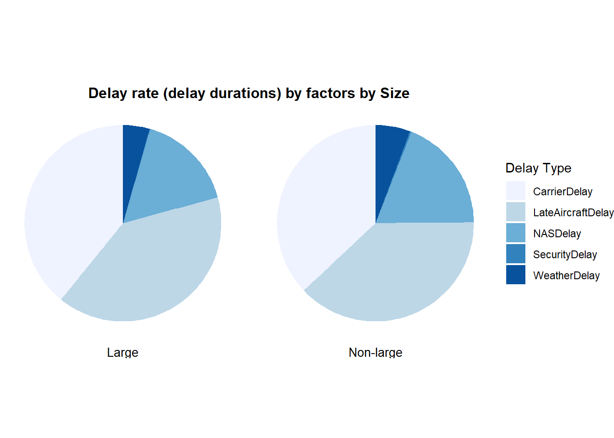

library(readr)
library(purrr)
library(dplyr)
library(tidyverse)
library(nycflights13)
library(ggmap)
library(rvest)
library(ggplot2)
library(dplyr)
library(lubridate)
library(scales)
library(forcats)
library(RColorBrewer)STATS506_FinalProject
git_address:“https://github.com/JiaweiQin-UM/STATS506.git”
Load Packages
Sys.setlocale("LC_TIME", "C")[1] "C"1. Import Data & Process
Downloading ZIP files is time-consuming. Therefore, I executed the chunk below in a local environment to download and process the data. The concatenated dataset was saved as an .RData file for future analysis.
So, for this chunk, the code is not executed when generating the QMD file. Instead, we save the processed file beforehand and load it when needed to save time.
# extact data from official website
# url
base <- 'https://www.transtats.bts.gov/PREZIP/'
template <- paste0(base, 'On_Time_Reporting_Carrier_On_Time_Performance_1987_present_{year}_{month}.zip')
#columns
columns <- cols_only(
FlightDate = col_datetime(),
Tail_Number = col_character(),
Reporting_Airline = col_character(),
Origin = col_character(),
Dest = col_character(),
DepTime = col_double(),
DepDelay = col_double(),
ArrTime = col_double(),
ArrDelay = col_double(),
Cancelled = col_double(),
CancellationCode = col_character(),
AirTime = col_double(),
Distance = col_double(),
CarrierDelay = col_double(),
WeatherDelay = col_double(),
NASDelay = col_double(),
SecurityDelay = col_double(),
LateAircraftDelay = col_double()
)
# download and combine files
dl_data <- function(month, year) {
fn <- paste0(year, "_", month, ".zip")
if (! file.exists(fn)) {
str_glue(template, year=year, month=month) %>% download.file(fn)
}
return(read_csv(fn, col_types = columns))
}
flights_2023 <- 1:12 %>% map(\(m) dl_data(m, 2023)) %>% list_rbind
# save file
save(flights_2023, file="flights_2023.RData")# load data
load('flights_2023.Rdata')
flights_2023 %>% head# A tibble: 6 × 18
FlightDate Reporting_Airline Tail_Number Origin Dest DepTime
<dttm> <chr> <chr> <chr> <chr> <dbl>
1 2023-01-02 00:00:00 9E N605LR BDL LGA 757
2 2023-01-03 00:00:00 9E N605LR BDL LGA 755
3 2023-01-04 00:00:00 9E N331PQ BDL LGA 755
4 2023-01-05 00:00:00 9E N906XJ BDL LGA 754
5 2023-01-06 00:00:00 9E N337PQ BDL LGA 759
6 2023-01-07 00:00:00 9E N336PQ BDL LGA 750
# ℹ 12 more variables: DepDelay <dbl>, ArrTime <dbl>, ArrDelay <dbl>,
# Cancelled <dbl>, CancellationCode <chr>, AirTime <dbl>, Distance <dbl>,
# CarrierDelay <dbl>, WeatherDelay <dbl>, NASDelay <dbl>,
# SecurityDelay <dbl>, LateAircraftDelay <dbl># import airline codes file
read_html('https://en.wikipedia.org/wiki/List_of_airline_codes') %>% html_table %>% .[[1]] ->
airline_codes
airline_codes %>% filter(! ICAO %in% c("COM", "EGF", "FLG")) -> ac_us_filt# merge file
flights_2023 %>%
left_join(ac_us_filt, join_by(Reporting_Airline == IATA))->df
df %>% head# A tibble: 6 × 23
FlightDate Reporting_Airline Tail_Number Origin Dest DepTime
<dttm> <chr> <chr> <chr> <chr> <dbl>
1 2023-01-02 00:00:00 9E N605LR BDL LGA 757
2 2023-01-03 00:00:00 9E N605LR BDL LGA 755
3 2023-01-04 00:00:00 9E N331PQ BDL LGA 755
4 2023-01-05 00:00:00 9E N906XJ BDL LGA 754
5 2023-01-06 00:00:00 9E N337PQ BDL LGA 759
6 2023-01-07 00:00:00 9E N336PQ BDL LGA 750
# ℹ 17 more variables: DepDelay <dbl>, ArrTime <dbl>, ArrDelay <dbl>,
# Cancelled <dbl>, CancellationCode <chr>, AirTime <dbl>, Distance <dbl>,
# CarrierDelay <dbl>, WeatherDelay <dbl>, NASDelay <dbl>,
# SecurityDelay <dbl>, LateAircraftDelay <dbl>, ICAO <chr>, Airline <chr>,
# `Call sign` <chr>, `Country/Region` <chr>, Comments <chr>2. Descriptive Analysis
df %>% summary FlightDate Reporting_Airline Tail_Number
Min. :2023-01-01 00:00:00.00 Length:7832885 Length:7832885
1st Qu.:2023-04-06 00:00:00.00 Class :character Class :character
Median :2023-07-05 00:00:00.00 Mode :character Mode :character
Mean :2023-07-03 21:24:27.03
3rd Qu.:2023-10-01 00:00:00.00
Max. :2023-12-31 00:00:00.00
Origin Dest DepTime DepDelay
Length:7832885 Length:7832885 Min. : 1 Min. : -99.00
Class :character Class :character 1st Qu.: 908 1st Qu.: -5.00
Mode :character Mode :character Median :1325 Median : -2.00
Mean :1334 Mean : 12.04
3rd Qu.:1750 3rd Qu.: 9.00
Max. :2400 Max. :4413.00
NA's :94097 NA's :94157
ArrTime ArrDelay Cancelled CancellationCode
Min. : 1 Min. :-119.00 Min. :0.00000 Length:7832885
1st Qu.:1038 1st Qu.: -15.00 1st Qu.:0.00000 Class :character
Median :1459 Median : -6.00 Median :0.00000 Mode :character
Mean :1456 Mean : 6.09 Mean :0.01251
3rd Qu.:1919 3rd Qu.: 9.00 3rd Qu.:0.00000
Max. :2400 Max. :4405.00 Max. :1.00000
NA's :99737 NA's :116551
AirTime Distance CarrierDelay WeatherDelay
Min. : 6.0 Min. : 21.0 Min. : 0 Min. : 0
1st Qu.: 64.0 1st Qu.: 404.0 1st Qu.: 0 1st Qu.: 0
Median : 99.0 Median : 689.0 Median : 4 Median : 0
Mean :116.3 Mean : 847.2 Mean : 26 Mean : 4
3rd Qu.:146.0 3rd Qu.:1084.0 3rd Qu.: 23 3rd Qu.: 0
Max. :724.0 Max. :5095.0 Max. :3957 Max. :1860
NA's :116551 NA's :6286930 NA's :6286930
NASDelay SecurityDelay LateAircraftDelay ICAO
Min. : 0 Min. : 0 Min. : 0 Length:7832885
1st Qu.: 0 1st Qu.: 0 1st Qu.: 0 Class :character
Median : 0 Median : 0 Median : 1 Mode :character
Mean : 12 Mean : 0 Mean : 27
3rd Qu.: 16 3rd Qu.: 0 3rd Qu.: 31
Max. :1708 Max. :1460 Max. :3581
NA's :6286930 NA's :6286930 NA's :6286930
Airline Call sign Country/Region Comments
Length:7832885 Length:7832885 Length:7832885 Length:7832885
Class :character Class :character Class :character Class :character
Mode :character Mode :character Mode :character Mode :character
3. Exploratory Data Analysis
a. Airline Performance in Delays
# delay rate by company
df %>%
group_by(Airline) %>%
summarise(
total = n(),
delayed = sum(ArrDelay > 0, na.rm = TRUE),
delay_rate = delayed / total) # A tibble: 16 × 4
Airline total delayed delay_rate
<chr> <int> <int> <dbl>
1 Alaska Airlines, Inc. 245344 94689 0.386
2 Allegiant Air 115539 48706 0.422
3 American Airlines 940531 361897 0.385
4 Delta Air Lines 984986 291816 0.296
5 Deutsche Luft Hansa 984986 291816 0.296
6 Endeavor Air 201520 47788 0.237
7 Envoy Air 227488 78396 0.345
8 Frontier Airlines 177542 82098 0.462
9 Hawaiian Airlines 80967 42758 0.528
10 JetBlue Airways 274852 121407 0.442
11 Midwest Airlines 295275 70047 0.237
12 PSA Airlines 194144 59363 0.306
13 SkyWest Airlines 675163 207618 0.308
14 Southwest Airlines 1438465 591500 0.411
15 Spirit Airlines 263871 117819 0.447
16 United Airlines 732212 256628 0.350# overall avergae delay rate
average_delay_rate <- df %>%
summarise(total = n(),
delayed = sum(ArrDelay > 0, na.rm = TRUE)) %>%
mutate(delay_rate = (delayed / total) * 100) %>%
pull(delay_rate)
average_delay_rate[1] 35.29154# plot "Arrival Delay Rate by Airline"
df %>%
group_by(Airline) %>%
summarise(total = n(),
delayed = sum(ArrDelay > 0,
na.rm = TRUE),
delay_rate = (delayed / total) * 100) %>%
mutate(Airline = fct_reorder(Airline, delay_rate,
.desc = FALSE)) %>%
ggplot(aes(x = Airline,
y = delay_rate)) +
geom_col() +
geom_hline(yintercept = average_delay_rate,
linetype = "dashed", color = "red") +
annotate("text", x = 2, y = 50,
label = paste("Mean Delay Rate =",
scales::percent(average_delay_rate/100)),
hjust = 0.7, vjust = -0.5,
color = "black", fontface = "bold", size = 3) +
labs(title = "Arrival Delay Rate by Airline",
x = "Airline",
y = "Delay Rate (%)") +
scale_y_continuous(labels = scales::percent_format(scale = 1)) +
theme_minimal() +
theme(plot.title = element_text(size = 12,
face = "bold",
hjust = 0.5)) +
coord_flip()b. Distance-Based Delay Analysis
# plot "Histogram of Arrival Delays by Distance"
df %>%
filter(ArrDelay > 0 & ArrDelay <= 300) %>%
mutate(distance_category = case_when(
Distance < 500 ~ "Short Haul",
Distance >= 500 & Distance < 1000 ~ "Medium Haul",
Distance >= 1000 & Distance < 2000 ~ "Long Haul",
Distance >= 2000 ~ "Ultra Long Haul"
)) %>%
ggplot(aes(x = ArrDelay)) +
geom_histogram(binwidth = 30) +
facet_wrap(~ distance_category, nrow = 2) +
labs(title = "Histogram of Arrival Delays by Distance",
x = "Arrival Delay (minutes)",
y = "Frequency") +
theme_minimal() +
theme(
strip.text = element_text(size = 10, face = "bold"),
plot.title = element_text(size = 12, face = "bold", hjust = 0.5),
axis.title = element_text(size = 10),
axis.text = element_text(size = 10),
panel.grid.major = element_line(color = "grey80"),
panel.grid.minor = element_blank()
)# plot "Arrival Delay Rate by Distance"
df %>%
mutate(distance_category = case_when(
Distance < 500 ~ "Short Haul",
Distance >= 500 & Distance < 1000 ~ "Medium Haul",
Distance >= 1000 & Distance < 2000 ~ "Long Haul",
Distance >= 2000 ~ "Ultra Long Haul"
)) %>%
group_by(distance_category) %>%
summarise(total = n(),
delayed = sum(ArrDelay > 0,
na.rm = TRUE),
delay_rate = (delayed / total) * 100) %>%
ungroup() %>%
ggplot(aes(x = distance_category,
y = delay_rate,
fill = distance_category)) +
geom_col(alpha = 0.8,
show.legend = FALSE) +
geom_text(aes(label = percent(delay_rate / 100, accuracy = 1)),
vjust = -0.5, size = 3) +
labs(title = "Arrival Delay Rate by Distance",
x = "Distance Category",
y = "Delay Rate (%)") +
scale_fill_brewer(palette = "Set3") +
scale_y_continuous(labels = scales::percent_format(scale = 1)) +
theme_minimal() +
theme(
text = element_text(size = 12),
axis.title.x = element_text(size = 10),
axis.title.y = element_text(size = 10),
plot.title = element_text(size = 12, face = "bold", hjust = 0.5),
panel.grid.major = element_blank(),
panel.grid.minor = element_blank()
)# find large company
large_airlines <- c("American Airlines", "United Airlines", "Delta Air Lines")
colors <- c("Large Airline" = "#003366", "Non-Large Airline" = "#6C7B8B")
df %>%
mutate(airline_category = ifelse(Airline %in% large_airlines,
"Large Airline",
"Non-Large Airline"),
distance_category = case_when(
Distance < 500 ~ "Short Haul",
Distance >= 500 & Distance < 1000 ~ "Medium Haul",
Distance >= 1000 & Distance < 2000 ~ "Long Haul",
Distance >= 2000 ~ "Ultra Long Haul"
)) %>%
group_by(airline_category, distance_category) %>%
summarise(total = n(),
delayed = sum(ArrDelay > 0,
na.rm = TRUE),
delay_rate = (delayed / total) * 100) %>%
ungroup() %>%
ggplot(aes(x = distance_category,
y = delay_rate,
fill = airline_category)) +
geom_col(position = "dodge",
alpha = 0.8) +
geom_text(aes(label = percent(delay_rate / 100,
accuracy = 1)),
position = position_dodge(width = 0.9),
vjust = -0.5,
size = 3) +
labs(title = "Arrival Delay Rate by Distance and Airline",
x = "Distance Category",
y = "Delay Rate (%)") +
scale_fill_manual(values = colors) +
scale_y_continuous(labels = scales::percent_format(scale = 1)) +
theme_minimal() +
theme(
text = element_text(size = 10),
axis.title.x = element_text(size = 10),
axis.title.y = element_text(size = 10),
plot.title = element_text(size = 12,
face = "bold",
hjust = 0.5),
panel.grid.major = element_blank(),
panel.grid.minor = element_blank()
)c. Temporal Delay Trends
# plot "Monthly Arrival Delay Rate by Distance"
df %>%
mutate(
distance_category = case_when(
Distance < 500 ~ "Short Haul",
Distance >= 500 & Distance < 1000 ~ "Medium Haul",
Distance >= 1000 & Distance < 2000 ~ "Long Haul",
Distance >= 2000 ~ "Ultra Long Haul"
),
month = floor_date(FlightDate, "month")
) %>%
group_by(month, distance_category) %>%
summarise(total = n(),
delayed = sum(ArrDelay > 0, na.rm = TRUE),
delay_rate = delayed / total) %>%
ungroup() %>%
ggplot(aes(x = month, y = delay_rate,
color = distance_category,
group = distance_category)) +
geom_line(size = 0.8) +
labs(title = "Monthly Arrival Delay Rate by Distance",
x = "Month",
y = "Delay Rate") +
theme_minimal() +
theme(plot.title = element_text(size = 12,
face = "bold",
hjust = 0.5))# plot "Arrival Delay Rate by Departure and Arrival Time"
# calculate times bins
time_bins <- function(time) {
hours <- time %/% 100
minutes <- time %% 100
time_str <- sprintf("%02d:%02d", hours, minutes)
start_hour <- floor(hours)
end_hour <- start_hour
start_time <- sprintf("%02d:00", start_hour)
end_time <- sprintf("%02d:59", end_hour)
paste(start_time, "-", end_time)
}
# plot
df %>%
filter(DepTime!='NA' | ArrTime!='NA') %>%
mutate(
DepTime = ifelse(DepTime >= 2400, 1, DepTime),
ArrTime = ifelse(ArrTime >= 2400, 1, ArrTime),
DepTime_bin = time_bins(DepTime),
ArrTime_bin = time_bins(ArrTime)) %>%
group_by(DepTime_bin, ArrTime_bin) %>%
summarise(total = n(),
delayed = sum(ArrDelay > 0,
na.rm = TRUE),
delay_rate = delayed / total, .groups = 'drop') %>%
ggplot(aes(x = DepTime_bin,
y = ArrTime_bin,
fill = delay_rate)) +
geom_tile() +
scale_fill_gradient(low = "white", high = "blue") +
labs(x = "Departure Time",
y = "Arrival Time",
fill = "Delay Rate",
title = "Arrival Delay Rate by Departure and Arrival Time") +
theme_minimal() +
theme(axis.text.x = element_text(angle = 90,
hjust = 1),
plot.title = element_text(size = 12,
face = "bold",
hjust = 0.5))d. Factor Analysis of Delay Causes
# plot "Delay rate (delay durations) by factors by Size"
df %>%
mutate(Airline_Size = case_when(
Airline %in% c("Delta Air Lines",
"American Airlines",
"United Airlines") ~ "Large",
TRUE ~ "Non-large"
)) %>%
filter(!if_all(c(CarrierDelay, WeatherDelay, NASDelay, SecurityDelay, LateAircraftDelay), is.na)) %>%
filter(ArrDelay > 0) %>%
group_by(Airline_Size) %>%
summarise(CarrierDelay = sum(CarrierDelay, na.rm = TRUE),
WeatherDelay = sum(WeatherDelay, na.rm = TRUE),
NASDelay = sum(NASDelay, na.rm = TRUE),
SecurityDelay = sum(SecurityDelay, na.rm = TRUE),
LateAircraftDelay = sum(LateAircraftDelay,
na.rm = TRUE),
TotalDelay = sum(ArrDelay, na.rm = TRUE)
) %>%
pivot_longer(cols = CarrierDelay:LateAircraftDelay,
names_to = "DelayType",
values_to = "DelayTime") %>%
mutate(Percentage = DelayTime / TotalDelay * 100) %>%
ggplot(aes(x = "",
y = Percentage,
fill = DelayType)) +
geom_bar(stat = "identity", width = 1) +
coord_polar("y", start = 0) +
facet_wrap(~ Airline_Size,
strip.position = "bottom") +
labs(title = "Delay rate (delay durations) by factors by Size",
fill = "Delay Type") +
scale_fill_brewer(palette = "Blues") +
theme_void() +
theme(plot.title = element_text(size = 12,
face = "bold",
hjust = 0.5),
strip.text = element_text(size = 10),
strip.placement = "outside")